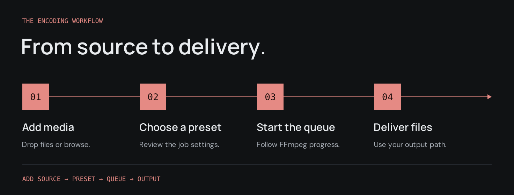
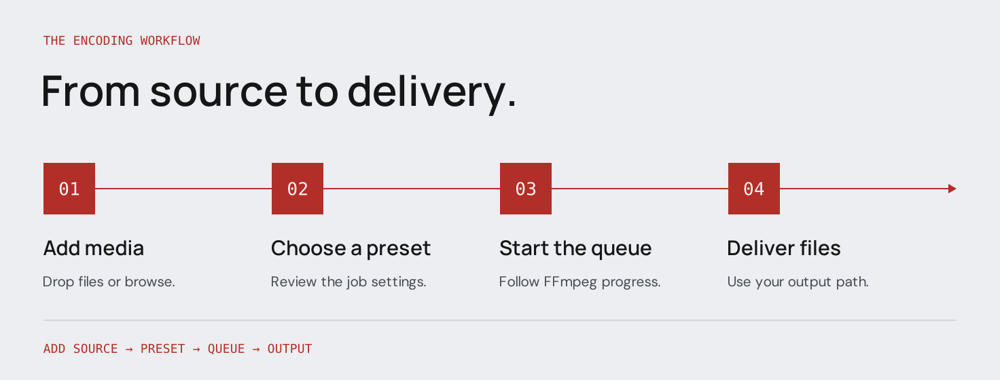
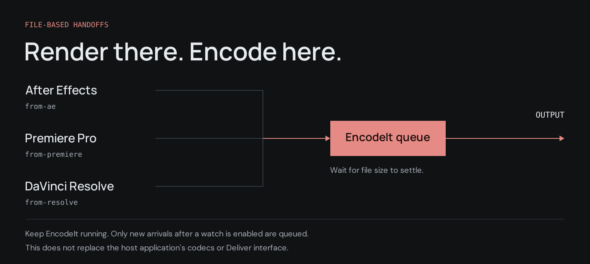
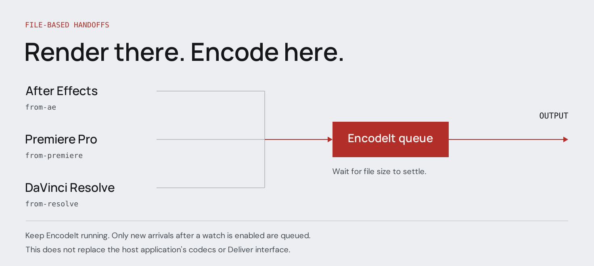

Queue
Progress, start/stop, multi-select jobs, and clear finished rows. Output goes to each job’s path.
Open-source · Powered by FFmpeg
Batch media encoding with a queue and preset browser — on macOS, Windows, and Linux.
Four stages: add a source, choose a preset, start the queue, deliver output. Diagrams are illustrations of the process — not screenshots of the app. Quick start in the guide.


Core surfaces for day-to-day encoding work.
Progress, start/stop, multi-select jobs, and clear finished rows. Output goes to each job’s path.
Delivery targets grouped for social, broadcast, mezzanine, and more — open FFmpeg recipes, not proprietary certified wrappers.
Per-job overrides, Export Settings, hardware acceleration when FFmpeg and your GPU support it, with software retry on failure.
After Effects, Premiere Pro, and DaVinci Resolve export into watch folders. EncodeIt queues files after the host finishes writing — it does not replace host codecs or Resolve’s Deliver UI. Watch folders in the guide.


Current version 1.0.2. Packaged installers replace an older build and keep your settings. Older packages stay in Releases.
Also on
v1.0.2: Windows portable, macOS PKG / zip, Linux .deb, and the
optional AE CEP zip.